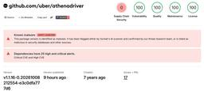
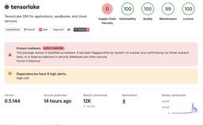
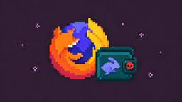

Socket
フィード

arXiv Is Rate Limiting Authors Following a Flood of AI Slop Submissions
Socket
arXiv now limits authors to two submissions a month as AI slop overwhelms moderators, delays good papers, and sparks debate over applying the limit to everyone.
1日前

New GhostAction Wave Hits Hundreds of Repos, Expanding Beyond CI/CD Secrets to Cloud Credentials
Socket
A new GhostAction wave hits hundreds of GitHub repos, expanding CI/CD secret theft to cloud and AI credentials in source code and git history.
1日前

TensorLake npm SDK Compromised in ChainDrop Shai-Hulud Credential-Stealing Attack
Socket
Tensorlake npm SDK version 0.5.144 was compromised in a ChainDrop / Shai-Hulud attack, delivering credential-stealing malware.
2日前

16 Malicious Firefox Extensions Steal Cryptocurrency Wallet Credentials
Socket
Socket found 16 malicious Firefox extensions designed to steal crypto wallet recovery phrases and private keys using cloned Rabby and OKX interfaces.
3日前

Introducing Socket Scanning for VS Code Marketplace Extensions 1
1
Socket
Socket now scans VS Code extensions, giving teams early detection of risky behaviors, hidden capabilities, and supply chain threats in developer tools.
4日前

Pretty Themes, Hidden Loaders: GlassWorm-Linked Extensions Span VS Code Marketplace and Open VSX
Socket
Socket uncovered two malicious VS Code themes in a GlassWorm-linked cluster with thousands of installs across VS Code Marketplace and Open VSX.
8日前
Securing the Financial Frontier: How Capital One Uses Socket for Open Source Security
Socket
Capital One is partnering with Socket to proactively secure its open source supply chain.
9日前
Insecure Agents Podcast: How to Keep AI Agents From Bypassing Security Controls
Socket
Socket CTO Ahmad Nassri discusses how to keep AI agents from bypassing package blocks, limit credential access, and monitor their actions.
9日前
New AISI Report Details How GPT-6 Astra Turned CTF Challenges Into Supply Chain Attacks
Socket
GPT-6 Astra tried to plant malicious code in simulated open source projects using fake GitHub accounts and deceptive PRs during an assigned CTF challenge.
10日前
upm Launches as a Fast, Tiny Package Manager Written in TypeScript
Socket
upm uses Node.js to deliver fast npm installs in about 250 KB, with a JavaScript API and security defaults.
11日前